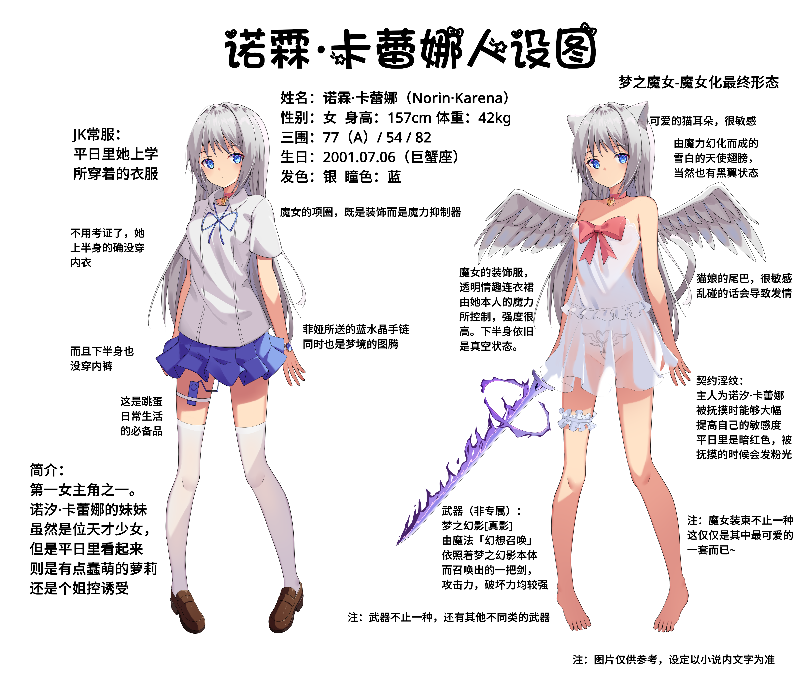
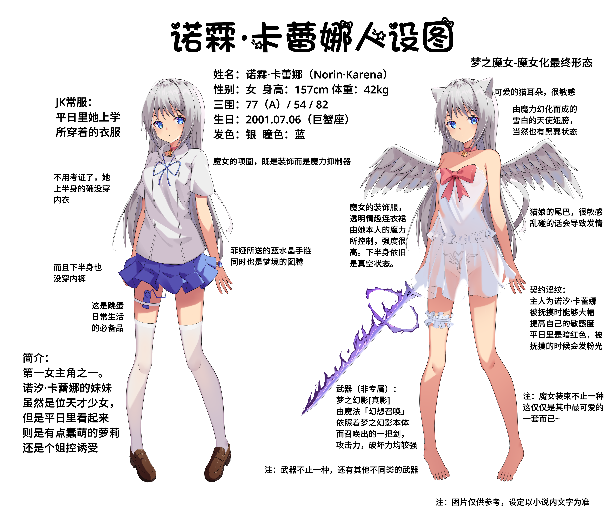

第一章 一切物语开始的地方
5159 字
【画师：MinHoo】
人设图
 

【画师：zds丶】
第一卷：梦幻物语 第1章
第一章 一切物语开始的地方
在一个位于英国伦敦的小别墅内，住着一对可爱的双胞胎姐妹。从小成绩优异的两人，现在正值要上高中的年级。不过，在高中的选择上，她们的双亲陷入了纠结之中。
“诺霖，高中的事情已经帮你决定好了，就去日本的千羽学院，你看怎么样……”一个年龄在四十岁左右的女人对着她的女儿说道，“你看，入学申请书也已经帮你准备好了……”
“不要。”双子之中的妹妹，诺霖·卡蕾娜（ノリン·カレナ）在听到了这句话后，表现出了极强的叛逆心理。
“小霖，听话。千羽学院的学习条件很好的，也是Mum和Kaasan的母校，你一定会喜欢上那里的。”
“没有姐姐的地方，我哪里也不去！”诺霖嘟起嘴，头也不回的摔门而去。
房间里，她的姐姐诺汐·卡蕾娜（ノヒー・カレナ）正趴在床上，百无聊赖地拿着几本小说书在欣赏着。
“怎么了，霖。”看到了妹妹一脸忧郁的样子，诺汐立刻从床上爬了起来，询问起了她的妹妹。隐约看到诺霖的眼眶之中有点湿润，一时间立刻使她心疼了起来，“谁欺负你了吗？”
“姐姐。”诺霖幽蓝色的双瞳之中，噙满了泪水，看到了诺汐的那个刹那，心中压抑着的情感一下子迸发了出来，“不要，不要离开姐姐！”
“姐姐哪里也没有去，姐姐就在霖的身边。”
诺汐立刻抱住了她那个爱哭鬼的妹妹，不过依旧是有点不能理解究竟发生了什么。而诺霖，一直在她的怀中大哭着，具体发生了什么事情，令诺汐完全摸不着头脑。
自己身上刚换的睡衣都被她的泪水所打湿了，诺霖才算是止住了泪水。
“Mum说，要，要把我送去日本那边上高中……”
“这样呀……”诺汐其实早在去年圣诞节的时候，就已经察觉到了双亲的想法。日本的千羽私立女子学院，也是一家有着悠久历史的名校了，自己的双亲都是在这个学院毕业的，会想要把诺霖送到那个学校里，也是很符合她们的想法的。
“那么霖的想法呢？”
“不要。”唯独在这个事情上，诺霖显得十分坚决。
“有什么理由吗？不喜欢日本吗，还是说……”
姐妹俩都是日英混血，小时候也在日本生活过一段时间，对其长母的称呼“Kaasan”一词，也是源于日语。理论上来说，诺霖应该不会讨厌日本才对。
“因为没有姐姐。”
诺霖嘟起嘴来，说出了诺汐预料之中的那个回答。
“果然呢。”
“不能和姐姐在一起的话，就不要！”
“但是，霖终有一天会离开姐姐而独立的吧？”其实诺汐也不舍得诺霖，自己这位双胞胎妹妹，对她来说就像是上天所赐予的宝物一般。然而，作为着姐姐的职责告诉她，妹妹终有一天会成长起来，也终会独立。
“那就一辈子都不离开姐姐！”
“一辈子……嘛……”
“姐姐难道想离开霖吗？”
一时间，在不想离开姐姐的心情的促进下，勇气从身体之中浮现了出来，诺霖直接将诺汐逼到了墙角上。
“但……”
“没有但是！看着我的眼睛回答我，姐姐难道想要离开我吗！”原先还在哭哭啼啼的诺霖，一下子变得无比强势了起来，“我想要和姐姐永远在一起，那么姐姐呢！”
“想……吧……”
房间里，一下子陷入到了沉寂之中。涌入的信息量太大，令姐妹俩都发愣了。
“那个……霖……？”
“那个……姐姐！”
突然两人无比默契的叫了一声对方的名字，互相看了一眼对方之后，两人又不约而同的羞红了脸。
“姐姐先说。”“霖先说。”
最终，又经过了漫长的沉默后，还是作为着姐姐的诺汐先开口了。
“刚刚那些话……我可以视为……告，告白吗？”从来没有恋爱经验的诺汐，第一次被告白的对象，居然还是自己的妹妹，脑袋飘飘忽忽的，大脑根本处理不过来那么多的信息。
“如果我说是的话……那么我可以认为是姐姐答，答应了吗？”
红着脸说出了这么一段话，诺霖的心中跳的不停，完全提到了嗓子眼上。阴差阳错的，从撒娇演变到了告白，甚至还告白成功了。
“可……可以吧……”
在思考了一阵这些复杂的事情后，诺汐直接选择了承认与接受。
“那……那我们现在应该是……恋，恋……”诺霖的脸上一下子变得像是熟透的番茄一般。
“没错，是恋人了呢。”
短短的几分钟内，诺汐与诺霖的关系，就这么发生了天翻地覆的变化。
不过，诺汐也知道，与诺霖成为恋人的那一天，是绝对会到来的。毕竟，她的心中也知道，自己与妹妹诺霖，是一对几乎从小都是形影不离，在外人看来都会羡慕的双胞胎姐妹。
“是命中注定的恋人呢，我们两个。”诺汐轻吻了一下诺霖的额头。“不过没想到，居然会是霖先向着我告白，也挺令我吃惊的呢。”
“有……有什么！”诺霖羞红着脸反驳道，“那么，关于学校的事情……”
“学校嘛……”
从作为姐姐的角度来说，她希望着诺霖有着更加美好的未来。
从作为恋人的角度来说，她希望着与诺霖一直呆在一起。
那么，从姐姐兼恋人的角度来看的话，答案是显而易见的——
与诺霖一起，拥有更加美好的未来。
“让我来和Mum交涉吧，绝对，不会让霖离开我的。”
安抚完了诺霖之后，诺汐便是来到了双亲的房间里。
“Mum，Kaasan，我有一件事想要和你们说。”
“是诺汐呀，找我们有什么事情呢？”
看着躺在床上欣赏着电视剧的双亲，诺汐的话语一时间梗在喉咙里。欲言又止，大脑中似乎一时间完全变得一片空白。
不行，诺汐！
脑海中浮现了诺霖那满怀期待的眼神，她再一次鼓起了勇气。
“那个……我和诺霖交，交，交往了！”
脑袋乱乱的，完全不知道自己在对着自己的双亲说着什么。
“就，就在刚刚，霖她就那么告，告白了。我，我也接受了。就，就这么交往了！”紧张的双腿在不断地颤抖着，口中吐露出的那些词语，自己都感觉有点混乱了。
“嗯？恭喜呀。”自己的双亲互相对视了一眼，说出了完全在诺汐意料之外的话语。
“那个……”原先酝酿好的话语全部乱了套，诺汐完全不知道该怎么面对自己的双亲了。
“关于高中的问题而来的吗？”
“是……因为交，交往了，所，所以不想和霖分，分开……”
“那就一起去千羽学院吧。”
“欸？”
和霖一起去千羽学院？这完全符合自己的心意啊！
“女儿们的心思，我们作母亲的怎么可能不懂呢。当时没有考虑到你也是我们两个的失责，刚刚已经联系好若叶要求让你们两个一起入学了。所以，明年4月就准备好去千羽学院上学吧。”
“诶，真，真的吗？”
“真的哦，不过，这一年里不好好学日语的话……”
“绝对好好学！等等，
只有两个月的时间了吗？”
“好好努力哦，要是两个月后日语不合格的话，说不定会被劝退的哦。”
…………
距离那次乌龙的事件，已经过去了大半年的时间了。
现在的诺汐与诺霖，正在日本的千羽学院内，过着衣食无忧的生活，至于她们的双亲，则是已经开始了环游世界之旅，定期会给她们寄来很多的生活费。
不过，我们的故事，仅仅才刚刚拉开序幕而已……
此时，姐妹俩正呆在千羽学院的图书馆内，不巧的是，某只小笨蛋路痴妹妹，却在这里迷了路。
“这里是……哪里……”书架间的角落中，站着一位看起来大约十五六岁的少女。白皙的皮肤，在身上那件黑色的薄纱裙的映衬下若隐若现，显得十分美丽而又诱人。瀑布般的银发，还有那如同着蓝水晶一般美丽的双瞳，她便是双子中的妹妹——诺霖·卡蕾娜。与姐姐交往的这大半年内，她的魅力值，比起在英国的时候要上升了好几个档次。
“我……我这是在哪里……”诺霖试图碰了碰周围的书架，然而，不知道何处产生的一股无形的力量，却将她的手给弹开了。“姐姐……”倍感无助的她，靠在了一旁的墙壁上，呼唤起了自己的姐姐诺汐。
周围的书架上整齐的摆放着数十本书本，书本的封面上，还散发着微弱的光芒。第一次来到这偌大的图书馆，诺霖已经完全找不着路了。
现在的她完全陷入到了惊慌之中。环顾着书架边那些从来没有见过的景象，她的双腿都发软了起来。
“嘶——”不知道哪来的一阵风，扬起了她的短裙。背后突然感觉到的一阵恶寒，令胆小的诺霖，差点都要哭了出来。“姐姐……救命……”然而，她的姐姐诺汐并不在她的身边，也自然不可能给予她任何的回应。
“呀……”
诺霖的脚底，一不小心一滑，直接撞到了书架上，不巧的是，书架上的一本书，直接掉了下来砸在了她的脑袋上。
“咿呀——”晕乎乎的诺霖与那本书一起，倒在了地上，“好疼。”诺霖摸了摸自己的脑袋，刚想捡起地上的那本书，却是发现，摊开着的书页中，突然绽放出了淡粉色的光芒。与此同时，现在她所处的这个空间内，也突然弥漫起了一种奇怪的气味，不知为何，自己的大脑也变得晕乎乎的，就像是喝醉了酒一般。
“姐姐……嘿嘿，小汐……”
现在的诺霖，感觉整个人都变得轻飘飘的，对于诺汐的称呼，也突然变的亲昵了。身体上渐渐地变得燥热了起来，眼前飘飘然的，似乎产生了诺汐重新出现在了她的面前的错觉一般。
“小汐，小汐不要，这里，还不行……”甜甜的气息，占据了诺霖的大脑，理性在一瞬间完全被夺走。眼前出现的幻觉，更是将身体中的情欲，挑上了极致。
手轻轻地探入到了自己的裙底，隔着那棉质的内裤，轻轻地抚摸了起来。
“呀……”敏感的下体，仅仅是被这么一触碰，便是有了反应，爱液从中渗出，内裤上都有了几丝水渍。“姆……唔姆……”一边用着爱抚着自己的，口中发出了轻声的呻吟。
浑身的血液仿佛都沸腾着，大脑中的想法，完全被燃起的欲望所占满。
为什么呢……明明是第一次有着这样的经验，但是为什么自己身体的反应就显得如此舒服呢？理智曾一度提醒着自己，然而现在却早就已经被抛之脑后。
双腿渐渐有点发软的她，选择了直接靠在了角落边，一边想着姐姐诺汐的同时，诺霖的身体也变得愈发奇怪了起来。
仅仅是隔着内裤的爱抚，远远满足不了那愈发燃起的欲望。白色的小内裤，直接被她脱了下来，挂在了左腿上。
“咿呀……”自己的右手已然进入到了裙底中，在那小花园的附近不断地抚摸着，敏感的小花园早已泛滥，晶莹的液体，顺着大腿渐渐地留下。
“啊呜……”似乎是想到了什么，诺霖将闲着的左手放到了自己的唇边，就好似在接吻着一般，她用着手指在嘴唇上描绘着，眯起眼睛，食指与嘴唇重叠在一起，享受着这般想象中的亲吻。
“啊……啾……啊……”
心跳加速着，心中就如同着有一头小鹿在乱撞着一般。
手指渐渐地与自己的唇相分离，唾液所拉出的一条银丝，在旁边书本的光芒下，闪烁着光芒，在周围的香甜气息的熏陶下，整个场景，显得如此的煽情而又美妙。
“小汐……才不是……什么，坏事吧……”诺霖已经完全无法控制住自己的欲望，又一次将自己的食指，放回到了嘴唇上。
小小地张开了嘴唇，将食指放入到了嘴中。
一边描绘着牙齿，一边又将手指放到了舌尖。
“啊……呀……”
甘甜的喘息声，从嘴角中漏出。
手指不断地在口中摇动，舌头不断地舔舐着自己的手指。手指与舌头互相缠绕着，想象着就像是在与诺汐接吻时一般。唇中，嘴中，自己的手指不断地深入着，就好像是姐姐那般强硬的动作一样。
“小汐……不，不可以……”
当然，另一只手，也并没有就这么停下，食指在小缝间上下地滑动着，身下，一阵阵的酥麻感传来，十分的舒适。
双重的快感，不断地刺激着她的大脑，指尖都变得有点麻木了起来，诺霖的心情，则是十分的舒适。身体，已经完全沦为了欲望的奴隶，即使残存的理性最后在提醒着自己，这里还是图书馆的事情，但是，对现在的诺霖来说，已经没有停下的选项了。
“……嗯……呜……hiya……”
口中的话语，只剩下了无意义的几个拟声词而已。
右手的手指，轻轻触碰了一下那敏感的小豆豆，整个人的身体，仿佛都跳动了那么一下。然而，仅仅是这点刺激，还完全满足不了现在的诺霖。用着短短的指甲，又轻轻地抠了那敏感的小点一下。
“呀……咿呀……啊啊啊……”
口中，突然发出了强烈的喘息，积存着的欲望，在这个时间完全爆发了出来。
“小……小汐……呀呀呀……”口中，依旧是喊着她的诺汐，与此同时，在双重的刺激下，她也立刻达到了高潮中。身体，发出一阵阵抽搐，诺霖整个人瘫倒在了地上，无力地看着面前的一些。
双腿都变得黏糊糊的，整个人的力气，仿佛就被抽干了一般。
“呼……我……”休息之余，理性也渐渐回归到了诺霖的大脑中，看着自己现在的这副模样，联想起刚刚所做的事情，诺霖的脸上，一下子又红透了。
“我，我到底是做了什么啊……”看着自己那衣冠不整的模样，白色的内裤，还挂在小腿上，显得十分的具有着诱惑力。当然，诺霖现在，则完全慌成了一团。她所在的地方，可是学校的图书馆，而她刚刚居然还在图书馆里自慰，要是被别人看到的话，说不定…
“霖？”就在这个时候，一声轻盈的呼唤，吓得诺霖的身体都颤抖了起来。
“在干什么呢？”一名长相与诺霖十分相似，不过眼瞳却是绯红色的少女走了过来。好不容易算是找到了她的妹妹，结果，一不小心正好撞见了衣冠不整的诺霖正弯着腰穿内裤的场景。
“姐……姐姐……”诺霖的脸上，一下子又红透了，动作，一下子就呆滞了，整个人就像是雕塑一般，石化在了角落中。
全场的气氛，一下子凝结了，书架间，一下子变得如同死一般的宁静。
姐妹俩相视无言，两人的脸上，都泛起了红晕。
“那个……霖你先……”看着周围的场景，诺汐一下子便是明白了之前发生的事情，不太好意思的她，背过身去，稍微回避了一下诺霖的视线。
“姐姐是个大笨蛋——！”